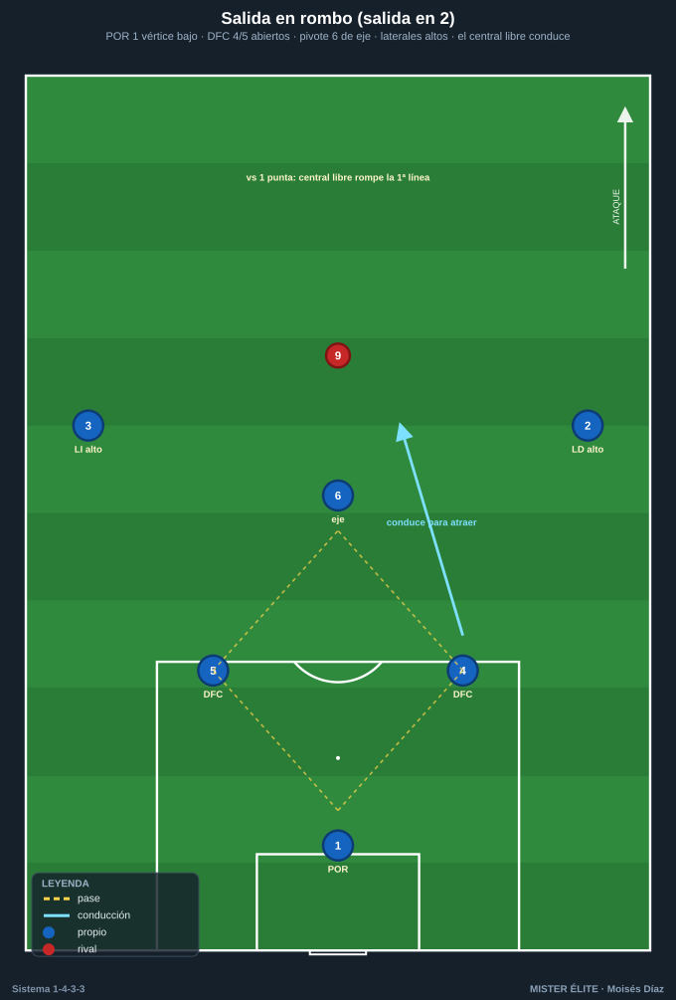
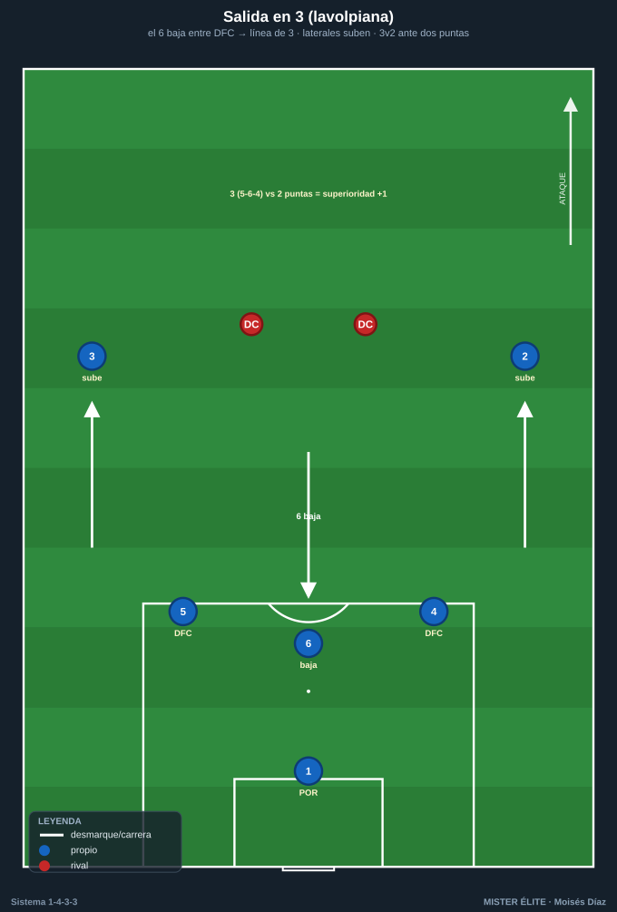
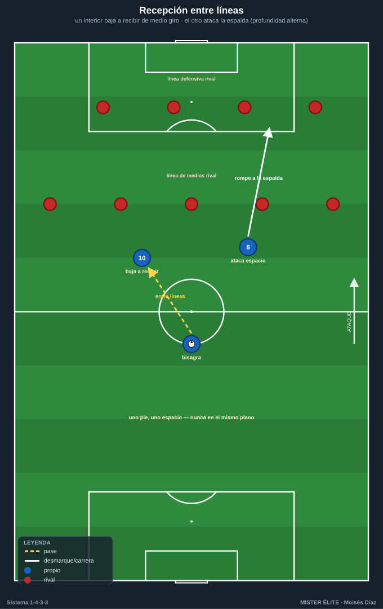
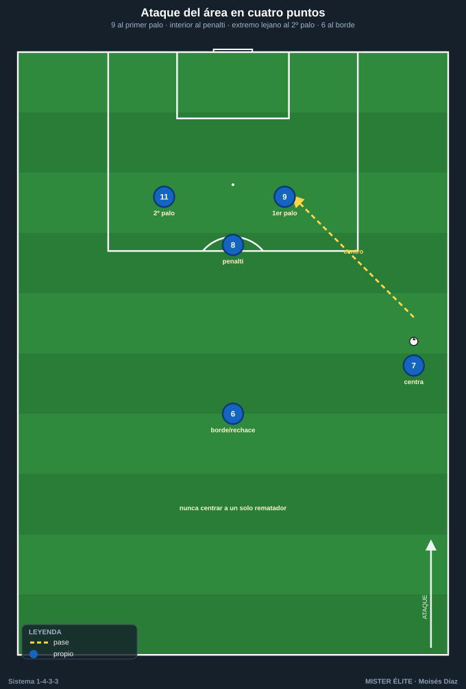

Módulo 03 · Fase ofensiva del 1-4-3-3
Nomenclatura: línea de 4 (LD 2 / LI 3 + DFC 4 y 5); mediocampo de 3 (pivote 6 + interiores 8/10); tridente (ED 7 · DC 9 · EI 11). El 6 nunca abandona el eje sin cobertura.
1. Inicio de juego — superar la primera presión
Objetivo: sacar el balón jugado, atraer la presión y, al superarla, generar superioridad por delante del balón. Dos estructuras base según cómo presione el rival.
A) Salida en 2 (rombo con el portero)
- Estructura: DFC 4 + DFC 5 abiertos a la anchura del área, pivote 6 entre líneas por delante de los centrales, POR 1 como vértice bajo del rombo. Laterales 2/3 altos, pegados a la cal.
- Cuándo: rival que presiona con 1 punta o con un 9 que no llega a tapar a los dos centrales.
- Mecánica: el central libre conduce hacia dentro para atraer y romper la primera línea. El 6 se ofrece en el eje; si lo marcan al hombre, rotación: el 6 se descuelga y un interior baja a recibir.

B) Salida en 3 — "salida lavolpiana"
- Estructura: el pivote 6 baja entre los dos DFC → línea de 3 (5-6-4). Los laterales 2/3 suben a la altura del medio; los interiores se elevan y el tridente fija la última línea.
- Cuándo: rival que presiona con 2 puntas. Genera 3 vs 2 en primera fase y libera a un central para conducir.
- Corrección: solo baja un lateral o el pivote, no ambos a la vez (si no, el equipo se alarga y se expone).

Puntos de superación: (1) crear siempre +1 sobre el número de presionadores; (2) central que conduce para fijar y liberar; (3) tercer hombre (el presionado descarga al libre); (4) si todo se cierra, bola a la espalda hacia el espacio del extremo/9.
2. Construcción en zona media — pivote e interiores
Superada la primera línea, el objetivo es progresar entre líneas y transformar la estructura para ocupar los cinco carriles.
- Pivote 6: se ofrece de cara, orienta el juego, da el pase entre líneas o lo limpia al lateral. Es la bisagra entre fases.
- Interiores 8/10 entre líneas: se posicionan en los intervalos entre el medio y la defensa rival, perfilados para jugar de cara. El 10 (asociativo) suele caer al carril interior izquierdo; el 8 (box-to-box) alterna recibir y atacar el espacio.
- Recepción entre líneas: uno baja a recibir (atrae al medio rival) y el otro ataca el espacio que deja → profundidad alterna (uno pie, uno espacio). Nunca los dos en el mismo plano.

Transformación 1-3-2-5 / 1-2-3-5
- 1-3-2-5: línea de 3 atrás = 2 DFC + un tercer hombre (el 6 que baja o un lateral que invierte); doble pivote con los dos restantes; 5 en la última línea (7 y 11 en banda, 8/10 en medio-espacios, 9 en eje, laterales dando amplitud o entrando por dentro).
- 1-2-3-5: 2 DFC atrás, 6 + 2 interiores (o 6 + interior + lateral invertido) en el medio, 5 arriba. Más agresiva.
- Regla de oro: máximo 3 por línea y 2 por carril. Cuando el extremo pisa por dentro, el lateral da la amplitud (y viceversa).
3. Último tercio — generación y finalización
- Extremos (7/11): fijan a los laterales rivales contra la cal, generan 1 vs 1 para desbordar o atraen para liberar el carril interior.
- Laterales (2/3): desdoble por fuera (overlap) cuando el extremo está por dentro, o juego por dentro (underlap / falso lateral) cuando el extremo mantiene la banda.
- Delantero 9: doble función — apoyo (cae a recibir de espaldas) y ruptura (ataca la profundidad fijando a los centrales). Su movimiento de fijar centrales libera la llegada de los interiores.
- Interiores (8/10): llegan desde atrás en segunda línea, atacando el punto de penalti y la frontal (mayor xG por sorpresa).
- Extremos a pie cambiado: conducen hacia dentro y rematan; el lateral que desdobla aporta amplitud y centro.
Ataque del área (referencias de centro)
Tres alturas obligatorias al centro lateral: 1. Primer palo → DC 9 (ataque tenso/desvío). 2. Punto de penalti → interior que llega (8 o 10). 3. Segundo palo → el extremo del lado contrario (11 o 7). 4. Rechace en la frontal → pivote 6 o interior restante (remate de segunda jugada y equilibrio).

4. Automatismos colectivos
- Pared (uno-dos): interior/9 que descarga de primeras y devuelve al espacio. Clave para superar al medio que presiona.
- Tercer hombre: A pasa a B (de espaldas/presionado), B descarga a C que llega de cara al espacio. Patrón típico: 6 → 9 (apoyo) → 8/10 llegando entre líneas.
- Tercio de banda (extremo-lateral-interior): triángulo en el carril lateral con pared, sobreposición o tercer hombre. La superioridad 3 vs 2 es el detonante del desborde.
- Llegada desde atrás: interiores y laterales aparecen en el último instante para no ser referenciados; el 9 y los extremos fijan, los de segunda línea finalizan.
Ideas clave
- Siempre +1 en la salida; salida lavolpiana solo contra 2 puntas y bajando uno, no todos.
- Anchura y profundidad simultáneas: extremos al máximo y 9 amenazando la espalda abren los intervalos de los interiores.
- Regla de carriles: 2 por carril / 3 por línea; extremo dentro → lateral fuera.
- El pivote 6 es la bisagra; recepción entre líneas perfilada (uno baja, otro rompe).
- Tres alturas al centro + frontal: nunca centrar a un solo rematador.
Errores comunes
- Sacar largo sin necesidad teniendo +1 en la salida.
- Bajar los dos laterales y el pivote a la vez en la salida en 3.
- Dos interiores recibiendo en el mismo plano (sin profundidad alterna).
- Solapar extremo y lateral en el mismo carril.
- Centrar con el área vacía o con un único rematador; llegar antes que el balón.
- Proyectar a todos y no dejar resto defensivo (6 + 2 DFC + 1 lateral).